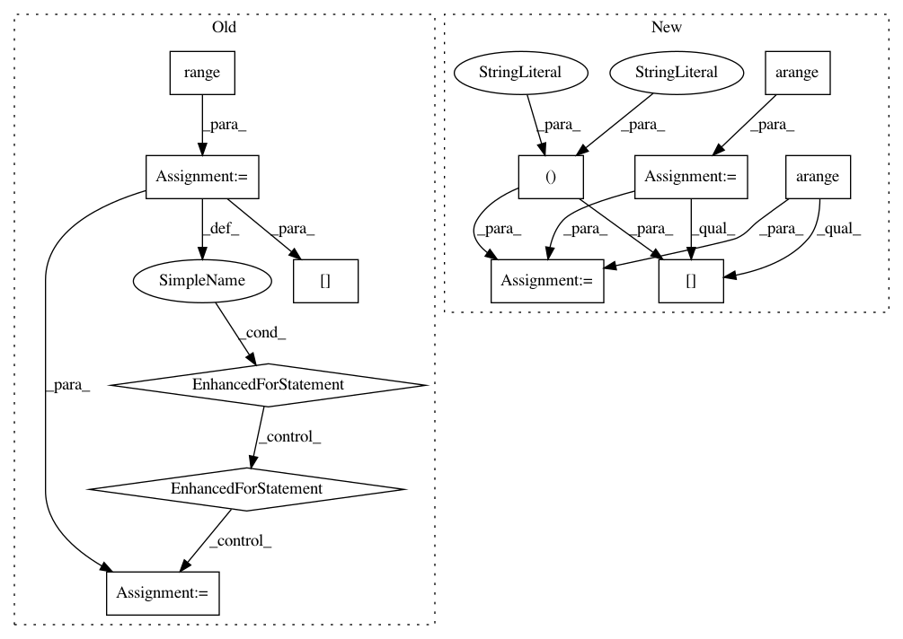

ba164c0dbb3d8171004380956a88431f4e8248ba,onmt/Models.py,Embeddings,make_positional_encodings,#Embeddings#Any#Any#,51
Before Change
def make_positional_encodings(self, dim, max_len):
pe = torch.zeros(max_len, 1, dim)
for i in range(dim):
for j in range(max_len):
k = float(j) / (10000.0 ** (2.0*i / float(dim)))
pe[j, 0, i] = math.cos(k) if i % 2 == 1 else math.sin(k)
return pe
def load_pretrained_vectors(self, emb_file):
if emb_file is not None:
After Change
return self.word_lut.embedding_dim
def make_positional_encodings(self, dim, max_len):
pe = torch.arange(0, max_len).unsqueeze(1).expand(max_len, dim)
div_term = 1 / torch.pow(10000, torch.arange(0, dim * 2, 2) / dim)
pe = pe * div_term.expand_as(pe)
pe[:, 0::2] = torch.sin(pe[:, 0::2])
pe[:, 1::2] = torch.cos(pe[:, 1::2])
return pe.unsqueeze(1)
def load_pretrained_vectors(self, emb_file):
In pattern: SUPERPATTERN
Frequency: 3
Non-data size: 12
Instances
Project Name: OpenNMT/OpenNMT-py
Commit Name: ba164c0dbb3d8171004380956a88431f4e8248ba
Time: 2017-08-01
Author: bpeters@coli.uni-saarland.de
File Name: onmt/Models.py
Class Name: Embeddings
Method Name: make_positional_encodings
Project Name: OpenNMT/OpenNMT-py
Commit Name: ba164c0dbb3d8171004380956a88431f4e8248ba
Time: 2017-08-01
Author: bpeters@coli.uni-saarland.de
File Name: onmt/Models.py
Class Name: Embeddings
Method Name: make_positional_encodings
Project Name: PIQuIL/QuCumber
Commit Name: 57d419c21650c6bad57ba7ac6b3b14a219b16a3a
Time: 2018-08-09
Author: emerali@users.noreply.github.com
File Name: qucumber/positive_wavefunction.py
Class Name: PositiveWavefunction
Method Name: generate_hilbert_space
Project Name: PIQuIL/QuCumber
Commit Name: 57d419c21650c6bad57ba7ac6b3b14a219b16a3a
Time: 2018-08-09
Author: emerali@users.noreply.github.com
File Name: qucumber/complex_wavefunction.py
Class Name: ComplexWavefunction
Method Name: generate_hilbert_space